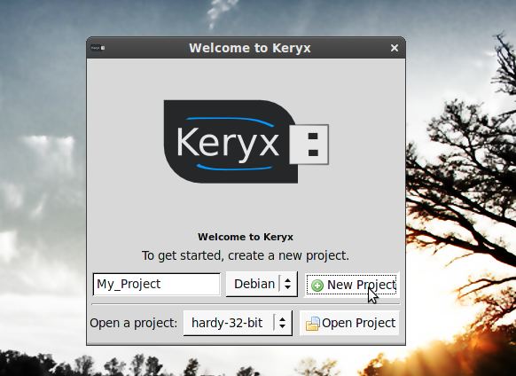
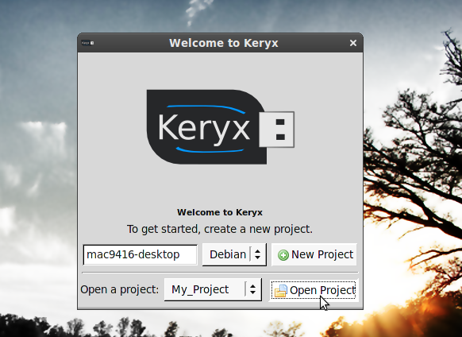
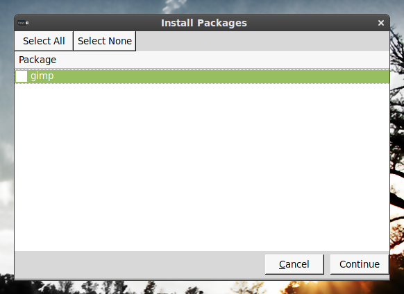
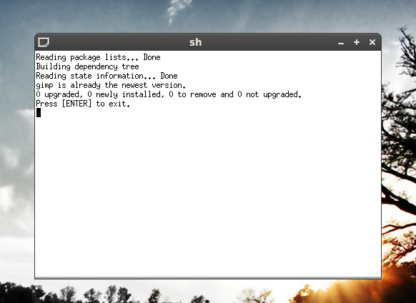

Grab Keryx from the Download page and extract it to your flash drive.
Navigate to the keryx/linux directory on your flash drive and double-click the 'keryx' icon.
Navigate to the keryx/win32 directory on your flash drive and double-click the 'keryx' or 'keryx.exe' icon.
After starting Keryx, enter the name of your project (or leave the default) and click 'New Project'.

When asked whether you would like to download the latest package lists, choose 'No', then exit Keryx.
Start Keryx and choose your project from the bottom drop-down menu. Then click 'Open Project'.

If you would like to have the latest packages available for download, choose 'Yes' when prompted whether to download latest package lists (recommended).
Open your project and select 'Install Packages' from the 'Project' menu. Check all the packages you want to install and click 'Continue'.

A terminal will display the progress of package installation. After installation is complete, press ENTER.

So that Keryx will know that you have installed new packages, you should now update the project status (Project > Update Status).
There are several ways to get help with a problem. You can
Please consider donating to the project!
{kind=link}
{kind=link}
{kind=link}
{kind=link}